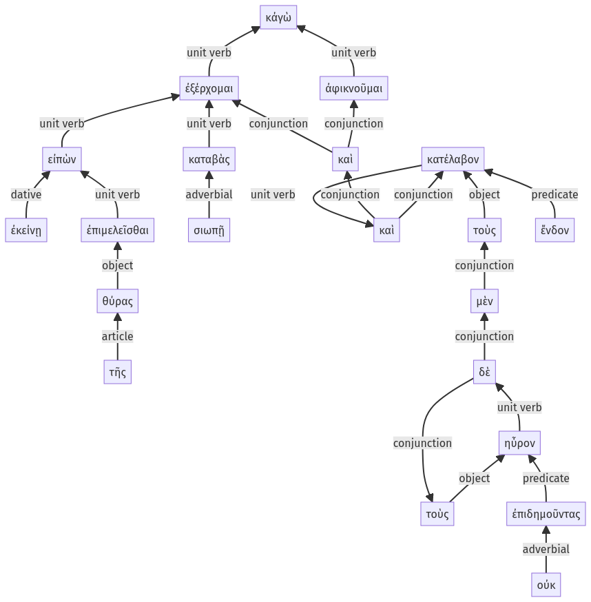

Lysias, Oration 1, 1.23.52-1.23.76a
1.23.36-1.23.51a | 1.24.1-1.24.11a
Sentence 66
1.23.52-1.23.76a
κἀγὼ εἰπὼν ἐκείνῃ ἐπιμελεῖσθαι τῆς θύρας, καταβὰς σιωπῇ ἐξέρχομαι, καὶ ἀφικνοῦμαι ὡς τὸν καὶ τόν, καὶ τοὺς μὲν ἔνδον κατέλαβον, τοὺς δὲ οὐκ ἐπιδημοῦντας ηὗρον.
2 εἰπὼν ἐκείνῃ
3 ἐπιμελεῖσθαι τῆς θύρας
2 καταβὰς σιωπῇ
1 ἐξέρχομαι
1 καὶ ἀφικνοῦμαι ὡς τὸν καὶ τόν
1 καὶ τοὺς μὲν ἔνδον κατέλαβον
1 τοὺς δὲ οὐκ ἐπιδημοῦντας ηὗρον
κἀγὼ εἰπὼν ἐκείνῃ ἐπιμελεῖσθαι τῆς θύρας, καταβὰς σιωπῇ ἐξέρχομαι, καὶ ἀφικνοῦμαι ὡς τὸν καὶ τόν, καὶ τοὺς μὲν ἔνδον κατέλαβον, τοὺς δὲ οὐκ ἐπιδημοῦντας ηὗρον.
Highlighting:
- connecting words
- unit verb
- subject
- object
Color code:
- Independent clause (level 1, intransitive verb)
- Independent clause (level 1, intransitive verb)
- Independent clause (level 1, transitive verb)
- Independent clause (level 1, transitive verb)
- circumstantial participle (level 2, transitive verb)
- infinitive in indirect statement (level 3, transitive verb)
- circumstantial participle (level 2, intransitive verb)
